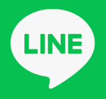
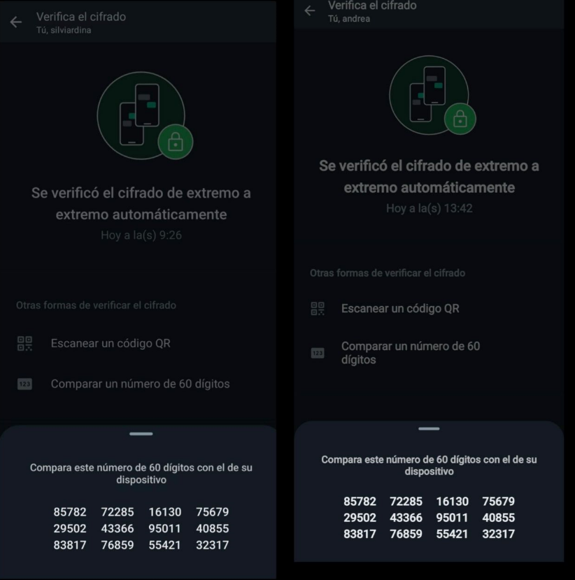
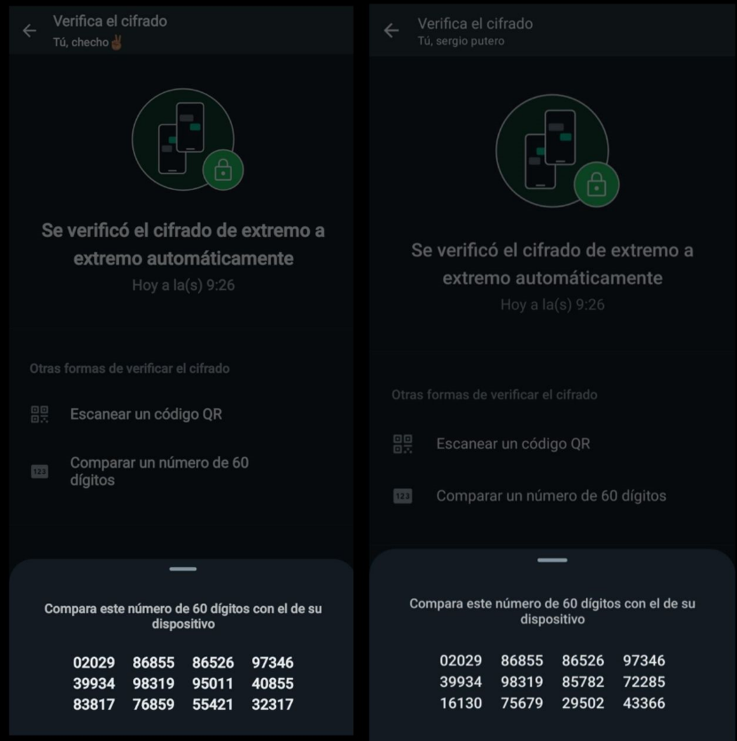

¿Qué es?
Es un tipo cifrado que permite que los datos que se intercambien sean privados sin que un tercero pueda acceder. Se encripta el contenido de los mensajes intercambiados por chat con una clave. La clave se encuentra únicamente en el dispositivo del emisor y receptor del mismo, siendo el sistema el que la reconoce sin que el usuario tenga que realizar ninguna acción y pueda ver los mensajes con plena normalidad. Es conocido como cifrado de extremo a extremo, o E2EE.
¿Aplicaciones con cifrado E2EE?
Signal
Ha sido una de las pioneras en implementarlo.
Telegram
Solo en los chats secretos, en la mayoría no está.
Facebook Messenger

Desde enero de 2023 se ha implementado progresivamente.
Line

Se ofrece tanto para chats como para archivos.
Tipos de mensajes
Mensajes personales
Este cifrado garantiza que solo el emisor y el receptor puedan leer o escuchar lo que se envía, y que nadie más, ni siquiera WhatsApp, pueda hacerlo. Esto ocurre debido a que, gracias al cifrado de extremo a extremo, los mensajes se aseguran con un candado, y solo tú y el destinatario tienen la llave especial que se necesita para desbloquearlos y leerlos. Todo esto ocurre de manera automática, sin necesidad de activar ninguna configuración especial para proteger tus mensajes.
Mensajes de Empresa
Los chats con empresas que usan WhatsApp Business o que administran y almacenan los mensajes de los clientes ellas mismas también están cifrados de extremo a extremo. Una vez que las empresas reciben los mensajes, estos quedan sometidos a las prácticas de privacidad de dichas empresas. Además, estas designan una cantidad específica de empleados, o incluso proveedores, para que procesen el mensaje y lo respondan. También pueden elegir la empresa matriz de WhatsApp, Meta, para que almacene de forma segura los mensajes y responda a los clientes. No es posible cambiar el estado de cifrado de un chat protegido con cifrado de extremo a extremo sin que dicho cambio sea visible para el usuario. Hay servicios opcionales que una empresa o uno mismo puede usar y por los cuales Meta recibe información limitada. Algunas empresas eligen usar la IA de Meta para que les ayude a responder los mensajes de los clientes. Meta recibe estos chats para mejorar la calidad de su IA.
¿Qué significa para la seguridad?
Los piratas informáticos criminales han obtenido una gran cantidad de información privada de manera ilegal y han abusado de la tecnología para provocar daños a la gente cuya información robaron. Desde que se completó la implementación del cifrado de extremo a extremo en 2016, la seguridad digital se ha vuelto incluso más importante. Antes de que un mensaje salga de tu dispositivo, se asegura con un candado criptográfico, del cual solo el destinatario tiene la clave. Además, las claves cambian con cada mensaje que se envía. Todo esto ocurre en segundo plano, pero se puede confirmar que las conversaciones están protegidas con el código de verificación de seguridad en tu teléfono.
¿Cómo podemos verificar el cifrado?
Podemos comprobarlo escaneando un QR o comparando un código de 60 dígitos.
Código de dos personas entre sí:

Se puede observar que los números del código coinciden, al ser el mismo chat.
Código de dos personas con una tercera persona:

Se puede observar que los números del código no coinciden, puesto que se tratan de diferentes chats.